library(patchwork)
library(palmerpenguins)
library(faux)
library(GGally)
library(tidyverse)
library(brms)
library(tidybayes)
set.seed(1234)TIL: Correlation and regression
A while ago I read something in Andrew Gelman’s blog about correlation and regression. The post is titled How to think about correlation? It’s the slope of the regression when x and y have been standardized. He says “I replied that the way I think about the correlation is that it’s the slope of the regression of y on x if the two variables have been standardized to have the same sd. And I pointed him to section 12.3 of Regression and Other Stories, which discusses this point.”
So, here are my notes on that.
Standarized scores
The place to start for me is standardized scores. I can get standardized scores by converting them to z-scores. There are other scores that qualify as standardized scores (I gather that standardized scores are not synonym with z-scores, even though many people take them as synonyms). z-scores are nice because they tells us how many standard deviations above or below the mean (of its distribution) a score is, regardless of the initial units of measurement.
We get z-scores by subtracting from each value its mean and then dividing by the standard deviation.
\[ \textit{z} = \frac{\textrm{X} - {\mu}}{\sigma} \] where:
\({\mu}\) is the mean of the population, \({\sigma}\) is the standard deviation of the population.
I’m going to use the Palmer penguins dataset as an example (I just finished attending a workshop that used that dataset). First, let’s see what flipper length looks like for the Chinstrap penguins.
penguins |>
filter(species == "Chinstrap") |>
ggplot(aes(x = flipper_length_mm)) +
geom_histogram(binwidth = 1, fill = "#78a2c0") +
labs(x = "flipper length (mm)") +
theme_minimal()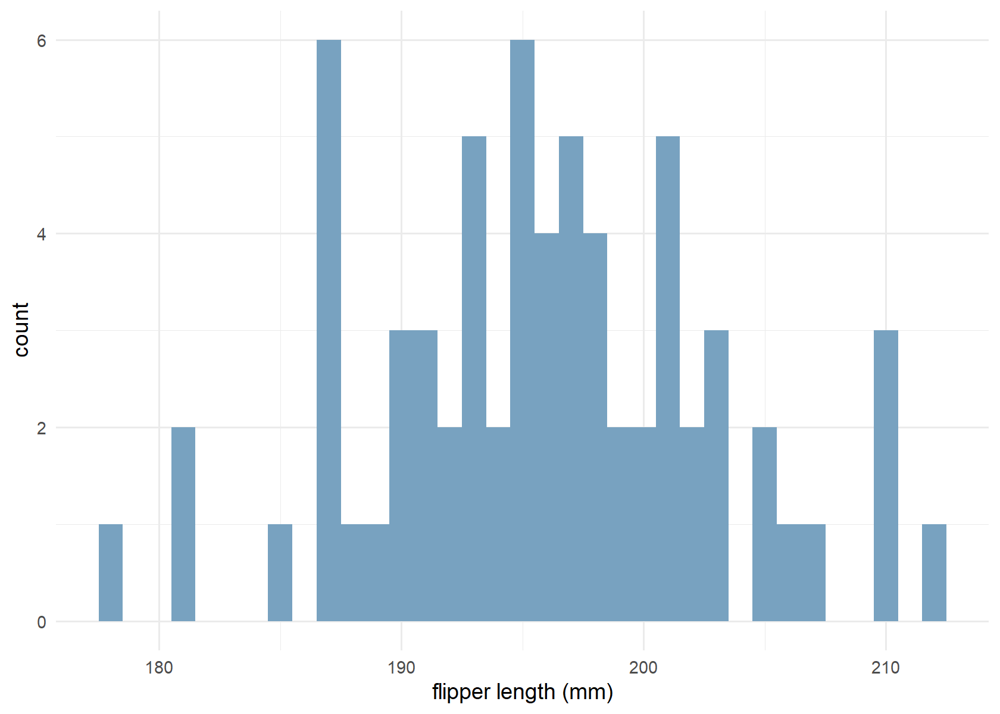
penguins |>
filter(species == "Chinstrap") |>
summarize(mean_flipper_length_mm = mean(flipper_length_mm),
sd = sd(flipper_length_mm))# A tibble: 1 × 2
mean_flipper_length_mm sd
<dbl> <dbl>
1 196. 7.13So, the mean flipper length is 196mm and the sd 7mm. Now, let’s create the z-scores.
chinstrap <- penguins |>
filter(species == "Chinstrap")
chinstrap_with_z <- chinstrap |>
mutate(mean_flipper_length_mm = mean(flipper_length_mm),
sd_flipper_length_mm = sd(flipper_length_mm),
z_flipper_length_mm = (flipper_length_mm - mean_flipper_length_mm)/sd_flipper_length_mm)
chinstrap_with_z |>
select(species, flipper_length_mm, mean_flipper_length_mm, sd_flipper_length_mm, z_flipper_length_mm) |>
head(10)# A tibble: 10 × 5
species flipper_length_mm mean_flipper_length_mm sd_flipper_length_mm
<fct> <int> <dbl> <dbl>
1 Chinstrap 192 196. 7.13
2 Chinstrap 196 196. 7.13
3 Chinstrap 193 196. 7.13
4 Chinstrap 188 196. 7.13
5 Chinstrap 197 196. 7.13
6 Chinstrap 198 196. 7.13
7 Chinstrap 178 196. 7.13
8 Chinstrap 197 196. 7.13
9 Chinstrap 195 196. 7.13
10 Chinstrap 198 196. 7.13
# ℹ 1 more variable: z_flipper_length_mm <dbl>A z score of 2.00 always signifies that the original score is exactly two standard deviations above its mean. In this case, a flipper length of 188mm is around one standard deviation from the mean.
And now let’s see how it looks like.
chinstrap_with_z |>
ggplot(aes(x = z_flipper_length_mm)) +
geom_histogram(fill = "#7f8cb0") +
labs(x = "standarized flipper length") +
theme_minimal()`stat_bin()` using `bins = 30`. Pick better value with `binwidth`.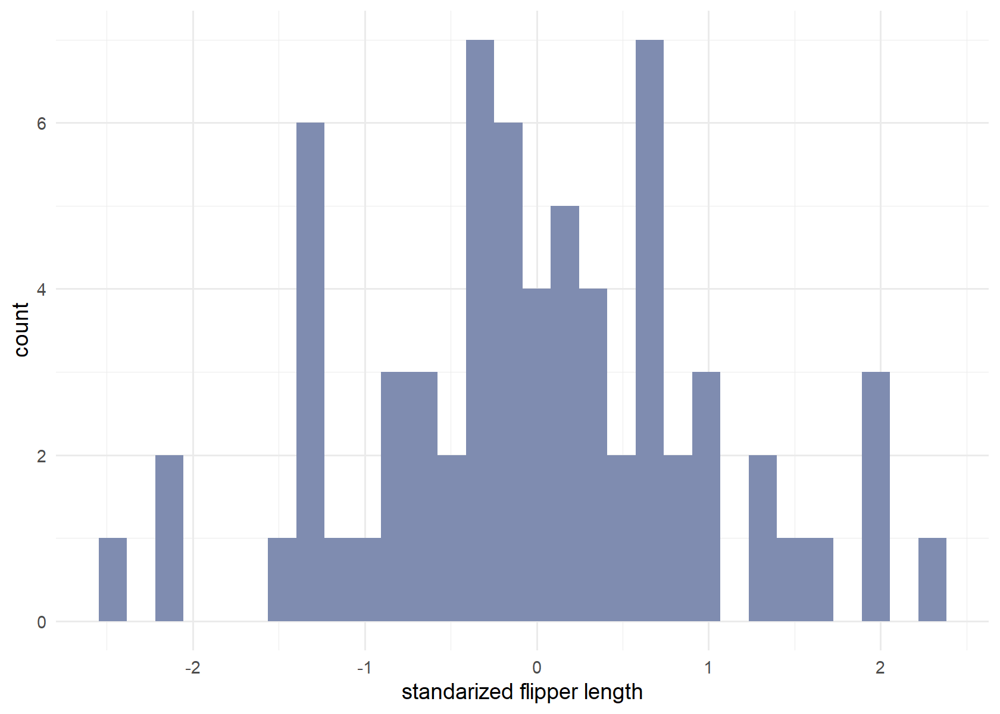
Converting all original observations into z scores leaves the normal shape intact but not the units of measurement (that’s the value!). If the original distribution approximates a normal curve, then the shift to standard or z scores will always produce a new distribution that approximates the standard normal curve. This is the one normal curve for which a table is actually available (the one with z-scores in one size and proportions on the other).
If we take a look at the table (usually in the back of a stats book), we’ll see that at 1 standard deviation we cover 68% of the curve (34.1% + 34.1%), at 2 standard deviation we cover 95% (47.7% + 47.7%), etc. This is known as the empirical rule
The way Gelman et al. (2020) write about this is: “We write the normal distribution with \(\mu\) and standard devitation \(\sigma\) as N(\(\mu\), \(\sigma^2\)). Approximately 50% of the mass of this distribution falls in the range \(\mu\) ± 0.67\(\sigma\), 68% in the range \(\mu\) ± \(\sigma\), 95% in the range \(\mu\) ± 2\(\sigma\), and 99.7% in the range \(\mu\) ± 3\(\sigma\)…To put it another way, if you take a random draw from a normal distribution, there is a 50% change it will fall within 0.67 standard deviations from the mean, a 68% change it will fall within 1 standard deviation from the mean, and so forth.” (p. 42).
And they show this graph:
data_norm <- tibble(x = seq(from = -4, to = 4, by = 0.01),
density = dnorm(x, mean = 0, sd = 1))
data_norm |>
ggplot(aes(x = x, y = density, ymin = 0, ymax = density)) +
geom_ribbon(data = . %>% filter(x >= -3 & x <= 3),
fill = "#6f7f7e") +
geom_ribbon(data = . %>% filter(x >= -2 & x <= 2),
fill = "#b1b1b1") +
geom_ribbon(data = . %>% filter(x >= -1 & x <= 1),
fill = "#cccccc") +
geom_line() +
annotate(geom = "text",
x = c(-1.5, 0, 1.5),
y = c(0.05, 0.15, 0.05),
label = c("13.5%", "68%", "13.5%")) +
scale_x_continuous(NULL, breaks = -3:3, expand = c(0, 0)) +
scale_y_continuous(NULL, breaks = NULL, expand = expansion(mult = c(0, 0.05))) +
labs(subtitle = "normal distribution") +
theme_minimal()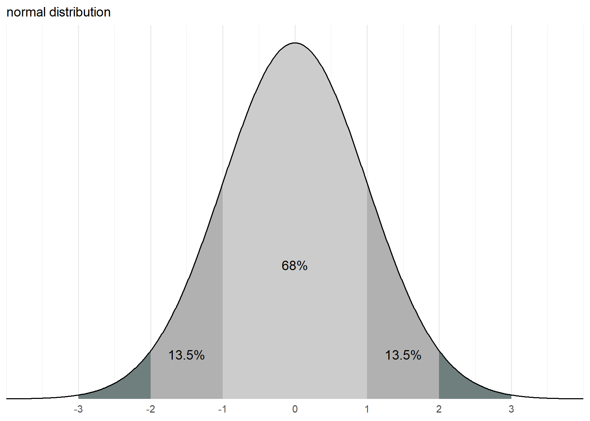
It turns out people get those percentages in r using pnorm(). To get the value within one standard deviation, we use:
pnorm(1) - pnorm(-1)[1] 0.6826895To get the value between 1 and 2 standard deviations, we use:
pnorm(-1) - pnorm(-2)[1] 0.1359051pnorm(2) - pnorm(1)[1] 0.1359051To get the value, within 0.67 standard deviations, we use
pnorm(0 + 0.67) - pnorm(0 - 0.67)[1] 0.4971422Correlation
Now, let’s look at the correlation between flipper length (mm) and body mass (grams) in the Chinstrap penguins. First let’s visualize the data
chinstrap |>
ggplot(aes(x = body_mass_g, y = flipper_length_mm)) +
geom_point(color = "#019176", size = 2) +
labs(x = "body mass (g)",
y = "flipper length (mm)") +
theme_minimal()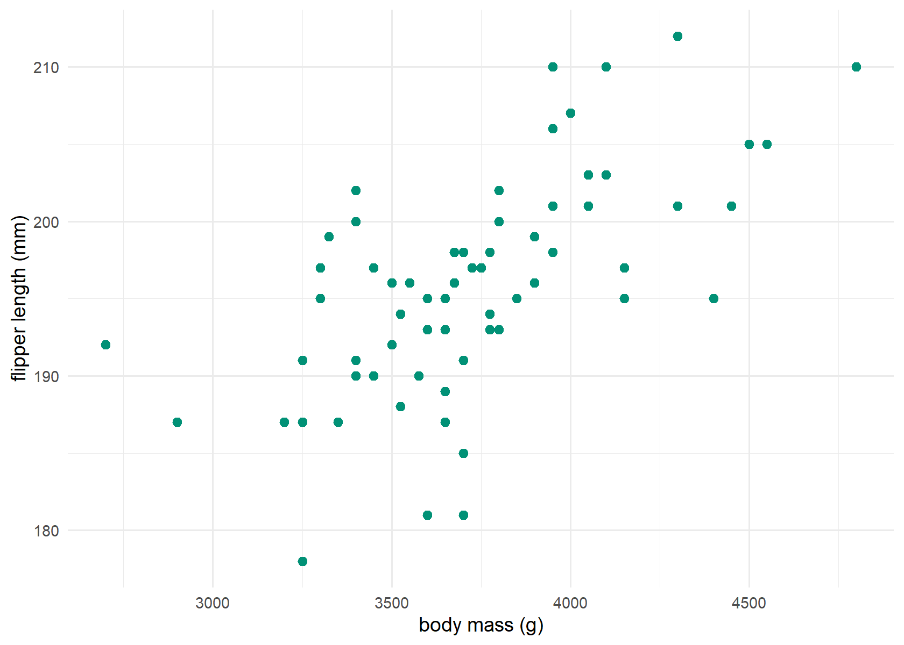
It looks like there is a linear relation with, penguins that are bigger, having longer flippers. Now, we can calculate the Pearson correlation coefficient, r, which is defined as
\[ \textit{r} = \frac{SP_{xy}}{\sqrt{SS_xSS_y}} \] where
\[ \textit{SS}{_x} = \sum{X^2}- \frac{(\sum{X})^2}{\textit{n}} \]
\[ \textit{SS}{_y} = \sum{Y^2}- \frac{(\sum{Y})^2}{\textit{n}} \]
\[ SP_{xy} = \sum{XY}-\frac{(\sum{X})(\sum{Y})}{n} \] That is a lot of stuff. In the numerator there is the sum of products, and in the denominator the sum of the products for each pair of deviation scores.
So, let’s calculate that, one by one.
chinstrap_r <- chinstrap |>
select(species, flipper_length_mm, body_mass_g) |>
mutate(XY = flipper_length_mm * body_mass_g,
X_squared = flipper_length_mm^2,
Y_squared = body_mass_g^2)
sum_X <- sum(chinstrap_r$flipper_length_mm) |> as.numeric()
sum_Y <- sum(chinstrap_r$body_mass_g) |> as.numeric()
sum_XY <- sum(chinstrap_r$XY) |> as.numeric()
sum_Xsquared <- sum(chinstrap_r$X_squared) |> as.numeric()
sum_Ysquared <- sum(chinstrap_r$Y_squared) |> as.numeric()
n = nrow(chinstrap_r) |> as.numeric()
SP = sum_XY - ((sum_X*sum_Y) / n)
SSx = sum_Xsquared - ((sum_X)^2 / n)
SSy = sum_Ysquared - ((sum_Y)^2 / n)
r = SP / sqrt(SSx*SSy)So, we get an r of 0.64. Now, let’s check with the build in function.
cor(chinstrap_r$flipper_length_mm, chinstrap_r$body_mass_g, method = c("pearson"))[1] 0.6415594So, we got the same thing!
Another way to do the above. Gelman et al. (2020) write “If two random variables u and v have mean \(\mu_u\), \(\mu_v\) and standard deviations \(\sigma_u\), \(\sigma_v\) , then their correlation is defined as \(\rho_{uv} = \operatorname E ((u - \mu_u)(v - \mu_v)) / (\sigma_u \sigma_v)\)” (p. 43). I need to get back to this formula later.
Regresion
Now, let’s check what happens in a regression.
In the book Regression and Other Stories, Gelman et al. (2020) write “Consider a regression with a constant term and one predictor; thus, \(y = a + bx + error\). If both of the variables \(x\) and \(y\) are standardized -that is, if they are defined as x <- (x-mean(x))/sd(x) and y <- (y-mean(y))/sd(y) -then the regression intercept is zero, and the slope is simply the correlation between x and y. Thus, the slope of a regression of two standardized variables must always be between -1 and 1, or, to put it another way, if a regression slope is more than 1 in absolute value, then the variance of \(y\) must exceed that of \(x\). In general, the slope of a regression with one predictor is \(b = \rho \sigma_y / \sigma_x\), where \(\rho\) is the correlation between the two variables and \(\sigma_x\) and \(\sigma_y\) are the standard deviations of \(x\) and \(y\).” (p. 187).
In other words, for this case (or in the case of simple, univariate standardized regression), the regression formula is \(y = 0 + r y\). So, let’s check that.
First, let’s plot the standardized scores for flipper length and body mass.
chinstrap_sd <- penguins |>
filter(species == "Chinstrap") |>
mutate(flipper_length_mm_sd = (flipper_length_mm - mean(flipper_length_mm)) / sd(flipper_length_mm),
body_mass_g_sd = (body_mass_g - mean(body_mass_g)) / sd(body_mass_g))
chinstrap_sd |>
ggplot(aes(x = body_mass_g_sd, y = flipper_length_mm_sd)) +
geom_point(color = "#019176", size = 2) +
labs(x = "standarized body mass",
y = "flipper length") +
theme_minimal()
The are both centered at 0. Let’s check their means:
round(mean(chinstrap_sd$flipper_length_mm_sd),2)[1] 0round(mean(chinstrap_sd$body_mass_g_sd),2)[1] 0Now, let’s calculate the regression using lm:
model1 <- lm(flipper_length_mm_sd ~ body_mass_g_sd,
data = chinstrap_sd)
summary(model1)
Call:
lm(formula = flipper_length_mm_sd ~ body_mass_g_sd, data = chinstrap_sd)
Residuals:
Min 1Q Median 3Q Max
-2.02325 -0.46712 0.05745 0.40506 1.62567
Coefficients:
Estimate Std. Error t value Pr(>|t|)
(Intercept) 1.293e-15 9.372e-02 0.000 1
body_mass_g_sd 6.416e-01 9.442e-02 6.795 3.75e-09 ***
---
Signif. codes: 0 '***' 0.001 '**' 0.01 '*' 0.05 '.' 0.1 ' ' 1
Residual standard error: 0.7729 on 66 degrees of freedom
Multiple R-squared: 0.4116, Adjusted R-squared: 0.4027
F-statistic: 46.17 on 1 and 66 DF, p-value: 3.748e-09round(model1$coefficients,2) (Intercept) body_mass_g_sd
0.00 0.64 And there it is. Intercept is zero, and the slope is 0.64. Let’s plot that to visualize it.
chinstrap_sd |>
ggplot(aes(x = body_mass_g_sd, y = flipper_length_mm_sd)) +
geom_point(color = "#019176", size = 2) +
geom_smooth(method='lm', se = FALSE) +
geom_abline(slope = r, intercept = 0, color = "#a6192c") +
labs(x = "standarized body mass",
y = "standarized flipper length") +
theme_minimal()`geom_smooth()` using formula = 'y ~ x'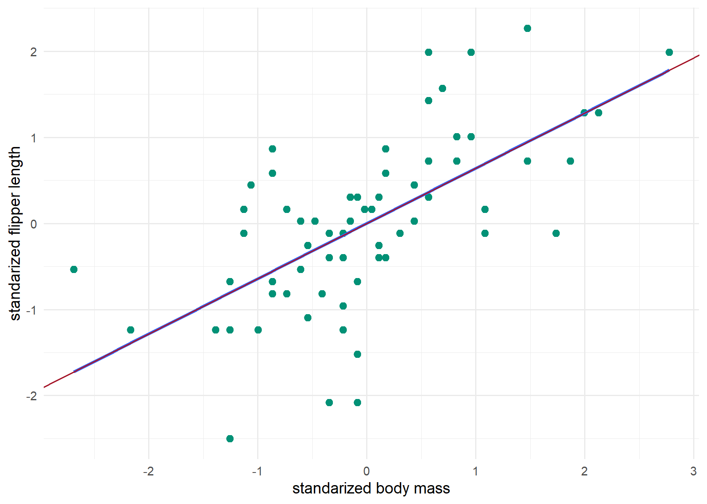
One line, the blue one, is showing the regression model. The other line, the red one, is showing the correlation coefficient.
Gelman et al. (2020) also say “in a least square regression with one predictor, one can show \(R^2\) equals the square of the correlation between x and y…There is no such interpretation for regressions with more than one predictor” (p. 169). Let’s see.
r^2[1] 0.4115985Yes, that’s what we get from the lm() output!
Bayesian regression
Now, there are a couple of things I need to keep in mind about this. And to make those points, let’s do the same process but with a Bayesian approach. So, we write the formula:
\[ \begin{align*} {y_{i}} & \sim \textrm{Normal}({\mu_i,\sigma}) \\ \mu_{i} & = \alpha + \beta \, \textrm{bodymass}_{i} \\ \alpha & \sim \textrm{Normal}(0,1) \\ \beta & \sim \textrm{Normal}(0,1) \\ \end{align*} \]
model1 <- brm(
data = chinstrap_sd,
family = gaussian,
flipper_length_mm_sd ~ 1 + body_mass_g_sd,
prior = prior(normal(0, 1), class = Intercept) +
prior(normal(0, 1), class = b)
)Compiling Stan program...Start samplingLet’s look at the summary.
summary(model1) Family: gaussian
Links: mu = identity; sigma = identity
Formula: flipper_length_mm_sd ~ 1 + body_mass_g_sd
Data: chinstrap_sd (Number of observations: 68)
Draws: 4 chains, each with iter = 2000; warmup = 1000; thin = 1;
total post-warmup draws = 4000
Population-Level Effects:
Estimate Est.Error l-95% CI u-95% CI Rhat Bulk_ESS Tail_ESS
Intercept -0.00 0.09 -0.19 0.18 1.00 4028 2895
body_mass_g_sd 0.64 0.09 0.45 0.82 1.00 4344 3006
Family Specific Parameters:
Estimate Est.Error l-95% CI u-95% CI Rhat Bulk_ESS Tail_ESS
sigma 0.79 0.07 0.66 0.94 1.00 3600 2902
Draws were sampled using sampling(NUTS). For each parameter, Bulk_ESS
and Tail_ESS are effective sample size measures, and Rhat is the potential
scale reduction factor on split chains (at convergence, Rhat = 1).Okay, so it is the same 0.64 value as before. Notice that we not only get the slope (our beta) but also we get uncertainty around it! Let’s plot it.
as_draws_df(model1) |>
ggplot(aes(x = b_body_mass_g_sd)) +
stat_halfeye(point_interval = mean_qi, fill = "#e9c46a") +
scale_x_continuous(expression(beta), limits = c(0,1)) +
theme_minimal()Warning: Removed 1 rows containing missing values (`stat_slabinterval()`).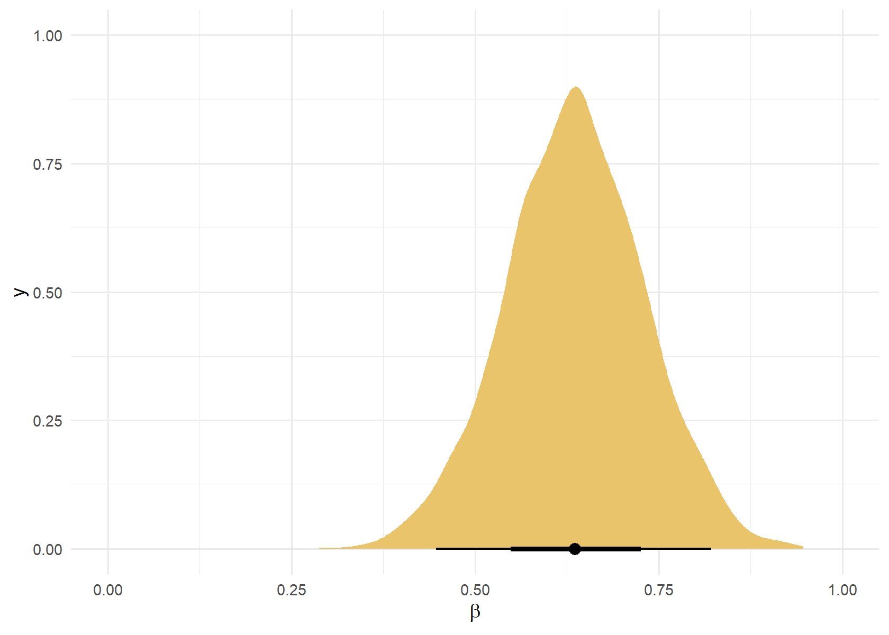
Bounded at 1?
Correlation coefficients give you a bounded measure. That is, the coefficient is between -1 and 1. It should be the same case for the slope. As Gelman et al. (2020) put it “Thus, the slope of a regression of two standardized variables must always be between -1 and 1, or, to put it another way, if a regression slope is more than 1 in absolute value, then the variance of \(y\) must exceed that of \(x\).” (p. 187). I’ll return to this point below.
They go on to say “The principal component line [figure on the left] minimizes the sum of squared distances between points and line. The principal component line in this case is simply y = x”. [The figure on the right] “shows the regression line which minimizes the sum of the squares of the vertical distances between the points and the line -it is the familiar least squares line.” Let’s replicate a similar example to the one in the book:
n = 1000
rho = .5
x <- rnorm(n = n, mean = 0, sd = 1)
y <- (rho * x) + sqrt(1 - rho*rho) * rnorm(n = n, mean = 0, sd = 1)
plot_principal <- tibble(x, y) |>
ggplot(aes(x = x, y = y)) +
geom_abline(color = "#6f7f7e") +
geom_point(size = 0.5, alpha = 0.4, color = ifelse(x < -2, "red", "black")) +
scale_x_continuous(breaks = NULL, limits = c(-4, 4)) +
scale_y_continuous(breaks = NULL, limits = c(-4, 4)) +
labs(subtitle = "principal component line") +
coord_equal() +
theme_minimal()
plot_regression <-tibble(x, y) |>
ggplot(aes(x = x, y = y)) +
geom_abline(color = "#6f7f7e", slope = 0.5) +
geom_point(size = 0.5, alpha = 0.4, color = ifelse(x < -2, "red", "black")) +
scale_x_continuous(breaks = NULL, limits = c(-4, 4)) +
scale_y_continuous(NULL, breaks = NULL, limits = c(-4, 4)) +
labs(subtitle = "regression line of y on x") +
coord_equal() +
theme_minimal()
plot_principal + plot_regression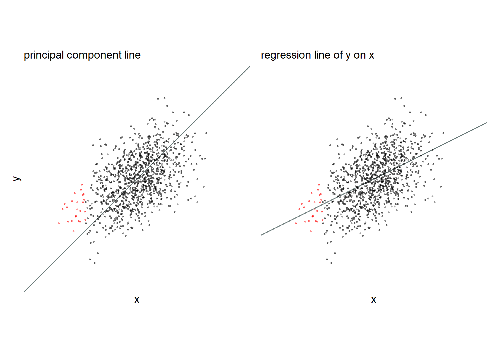
Their point is that given the above scatterplot, the regression line works better for estimating the average of y for any given value of x. In the red points above, “the principal component line underpredicts y for low values of x…and overpredicts y for high values of x”.
Going back to their first point “if a regression slope is more than 1 in absolute value, then the variance of \(y\) must exceed that of \(x\).” I’m trying to figure out what that means since by definition, standardizing centers the data with a mean of 0 and a standard deviation of 1. So, let’s simulate data again. I learned about the package below from Solomon Kurz’s workshop (that workshop was great, by the way).
d <- rnorm_multi(
n = 100,
mu = c(0, 0, 0),
sd = c(1, 1, 3.7),
r = c(.8, .8, .8),
varnames = list("x", "y", "z")
) %>%
# make standardized versions of the variables
mutate(x = (x - mean(x)) / sd(x),
y = (y - mean(y)) / sd(y),
z = (z - mean(z)) / sd(z))
d %>%
select(x:z) %>%
ggpairs(upper = list(continuous = wrap("cor", stars = FALSE)),
lower = list(continuous = wrap("smooth", size = 1/2, alpha = 1/2, se = FALSE)))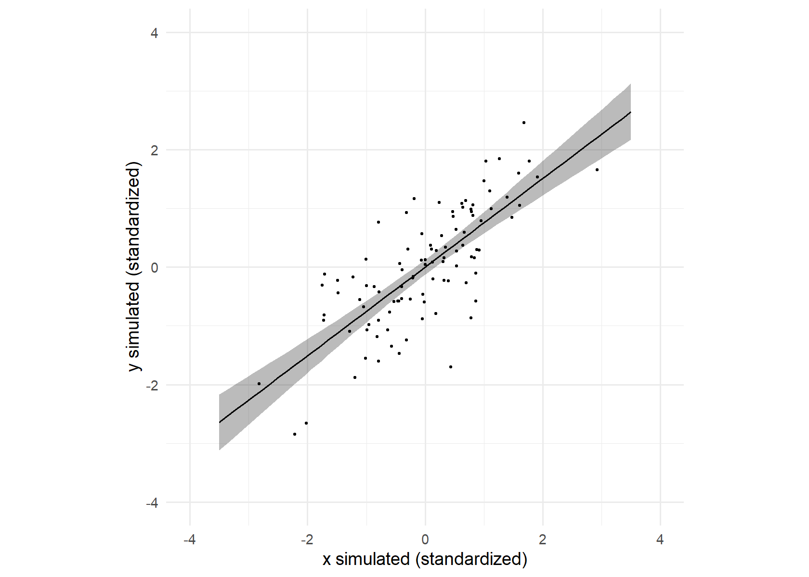
Let’s double check.
cor(d$x,d$y)[1] 0.7575905okay!
Now, let’s run a similar Bayesian model as the one before with our x and y
model2 <- brm(
data = d,
family = gaussian,
y ~ 1 + x,
prior = prior(normal(0, 1), class = Intercept) +
prior(normal(0, 1), class = b)
)Compiling Stan program...Start samplingSo, here is our summary, with a correlation between x and y of .75 as in the ggpairs plot.
summary(model2) Family: gaussian
Links: mu = identity; sigma = identity
Formula: y ~ 1 + x
Data: d (Number of observations: 100)
Draws: 4 chains, each with iter = 2000; warmup = 1000; thin = 1;
total post-warmup draws = 4000
Population-Level Effects:
Estimate Est.Error l-95% CI u-95% CI Rhat Bulk_ESS Tail_ESS
Intercept 0.00 0.06 -0.13 0.13 1.00 4664 3161
x 0.75 0.07 0.62 0.88 1.00 3838 2939
Family Specific Parameters:
Estimate Est.Error l-95% CI u-95% CI Rhat Bulk_ESS Tail_ESS
sigma 0.66 0.05 0.58 0.77 1.00 4108 2886
Draws were sampled using sampling(NUTS). For each parameter, Bulk_ESS
and Tail_ESS are effective sample size measures, and Rhat is the potential
scale reduction factor on split chains (at convergence, Rhat = 1).Now, let’s plot that regression line.
new_data <- tibble(x = seq(from = -3.5, to = 3.5, length.out = 50))
fitted(model2, newdata = new_data) |>
data.frame() |>
bind_cols(new_data) |>
ggplot(aes(x = x)) +
geom_ribbon(aes(ymin = Q2.5 , ymax = Q97.5),
alpha = 1/3) +
geom_line(aes(y = Estimate)) +
geom_point(data = d,
aes(y = y),
size = 1/2) +
coord_equal(xlim = c(-4, 4),
ylim = c(-4, 4)) +
theme_minimal() +
labs(x = "x simulated (standardized)",
y = "y simulated (standardized)")
So, let’s plot that correlation.
as_draws_df(model2) |>
ggplot(aes(x = b_x)) +
stat_halfeye(point_interval = mean_qi, fill = "#e9c46a") +
scale_x_continuous(expression(rho["y, x"]), limits = c(0,1.2)) +
theme_minimal()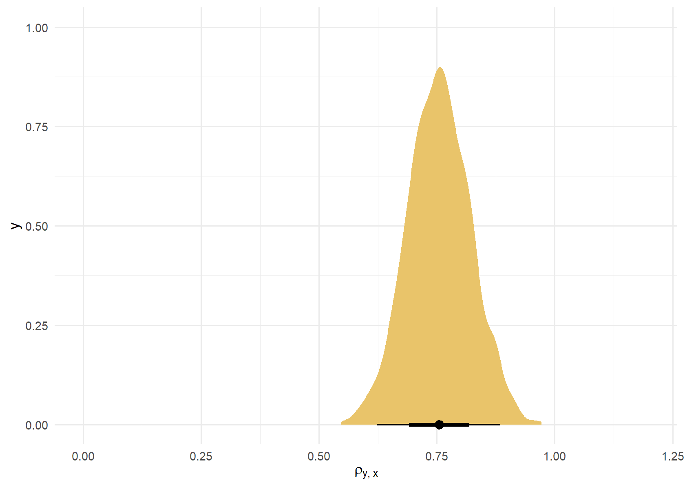
Now, let’s look at the ones with different variance.
model3 <- brm(
data = d,
family = gaussian,
z ~ 1 + x,
prior = prior(normal(0, 1), class = Intercept) +
prior(normal(0, 1), class = b)
)Compiling Stan program...Start samplingSo, here is our summary.
summary(model3) Family: gaussian
Links: mu = identity; sigma = identity
Formula: z ~ 1 + x
Data: d (Number of observations: 100)
Draws: 4 chains, each with iter = 2000; warmup = 1000; thin = 1;
total post-warmup draws = 4000
Population-Level Effects:
Estimate Est.Error l-95% CI u-95% CI Rhat Bulk_ESS Tail_ESS
Intercept -0.00 0.06 -0.13 0.12 1.00 3518 2890
x 0.77 0.06 0.65 0.90 1.00 3166 2543
Family Specific Parameters:
Estimate Est.Error l-95% CI u-95% CI Rhat Bulk_ESS Tail_ESS
sigma 0.64 0.05 0.56 0.74 1.00 3740 2670
Draws were sampled using sampling(NUTS). For each parameter, Bulk_ESS
and Tail_ESS are effective sample size measures, and Rhat is the potential
scale reduction factor on split chains (at convergence, Rhat = 1).as_draws_df(model3) |>
ggplot(aes(x = b_x)) +
stat_halfeye(point_interval = mean_qi, fill = "#e9c46a") +
scale_x_continuous(expression(rho["z, x"]), limits = c(0,1.2)) +
theme_minimal()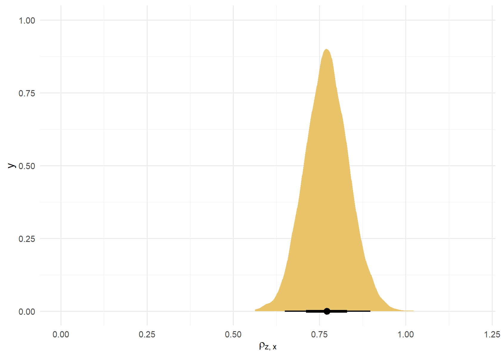
In both cases, the slope is almost the same but notice how in the second model, our estimate for the slope goes beyond 1.
Bayesian correlation
We did the univariate case above, but in Solomon Kurz’s workshop on Bayesian regression (2023), he went over Bayesian correlations, so I’m going to make sure I understood what he said.
He starts “a \(\beta_1\) coefficient in a completely standardized univariable model is in a correlation metric”. Indeed, that’s the previous sections.
Fit an unconditional multivariate model
Multivariate models are models with 2 or more dependent (i.e. criterion) variables. He suggests Bürkner vignette for that: Estimating multivariate models with brms.
Based on Kurz notes this requires in brms:
- List the criterion variables in the
mvbind()function on the left side of the model formula. - Wrap the model formula within the
bf()function. - Tack
set_rescor(TRUE)on after thebf()statement. - Indicate which priors go with which criterion variable with the resp argument within the
prior()functions.
In this case we create a multivariate model with an intercept only. It should return, the correlation we saw in model 3.
model4 <- brm(
data = d,
family = gaussian,
bf(mvbind(x, z) ~ 1) + set_rescor(TRUE),
# we continue to use weakly-regularizing priors,
# this time adjusted to the scale of the standardized data
prior = prior(normal(0, 1), class = Intercept, resp = x) +
prior(normal(0, 1), class = Intercept, resp = z) +
prior(exponential(0.1), class = sigma, resp = x) +
prior(exponential(0.1), class = sigma, resp = z) +
# this line is very new
prior(lkj(2), class = rescor),
chains = 4,
cores = 4,
seed = 28)Compiling Stan program...Start samplingprint(model4, digits = 3) Family: MV(gaussian, gaussian)
Links: mu = identity; sigma = identity
mu = identity; sigma = identity
Formula: x ~ 1
z ~ 1
Data: d (Number of observations: 100)
Draws: 4 chains, each with iter = 2000; warmup = 1000; thin = 1;
total post-warmup draws = 4000
Population-Level Effects:
Estimate Est.Error l-95% CI u-95% CI Rhat Bulk_ESS Tail_ESS
x_Intercept -0.001 0.098 -0.184 0.194 1.001 2325 2712
z_Intercept -0.002 0.099 -0.191 0.194 1.001 2423 2704
Family Specific Parameters:
Estimate Est.Error l-95% CI u-95% CI Rhat Bulk_ESS Tail_ESS
sigma_x 1.006 0.071 0.879 1.154 1.001 2567 2661
sigma_z 1.006 0.072 0.882 1.157 1.000 2648 2812
Residual Correlations:
Estimate Est.Error l-95% CI u-95% CI Rhat Bulk_ESS Tail_ESS
rescor(x,z) 0.760 0.043 0.668 0.836 1.001 2503 2646
Draws were sampled using sampling(NUTS). For each parameter, Bulk_ESS
and Tail_ESS are effective sample size measures, and Rhat is the potential
scale reduction factor on split chains (at convergence, Rhat = 1).The correlation parameter is found in the Residual Correlations section of the output. Kurz says “Keep in mind that a”residual” correlation in a model with no predictors is the same as a correlation…Note that with this approach, it’s fine to use wither standardized or unstandardized versions of the variables in the model. Either way, the correlation will come out in the same metric.”. Let’s plot to know how to extract it.
as_draws_df(model4) |>
ggplot(aes(x = `rescor__x__z`)) +
stat_halfeye(point_interval = mean_qi, fill = "#e9c46a") +
scale_x_continuous(expression(rho["[z, x]"]), limits = c(0, 1)) +
scale_y_discrete(NULL, expand = expansion(mult = 0.1)) +
theme(panel.grid.major.y = element_blank(),
panel.grid.minor = element_blank()) +
theme_minimal()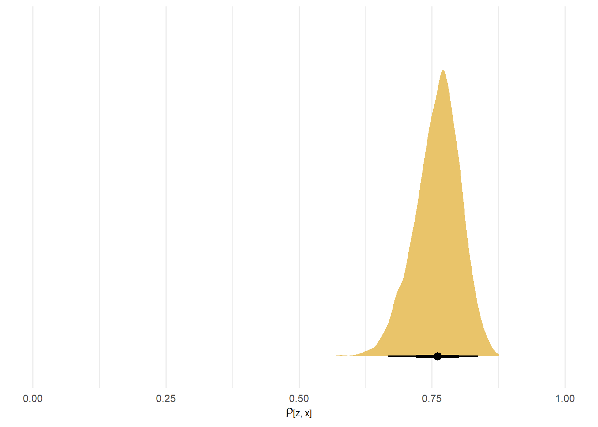
This can be further extended to a include the other variable.
model5 <- brm(
data = d,
family = gaussian,
bf(mvbind(x, y, z) ~ 1) + set_rescor(TRUE),
prior = prior(normal(0, 1), class = Intercept, resp = x) +
prior(normal(0, 1), class = Intercept, resp = y) +
prior(normal(0, 1), class = Intercept, resp = z) +
prior(exponential(0.1), class = sigma, resp = x) +
prior(exponential(0.1), class = sigma, resp = y) +
prior(exponential(0.1), class = sigma, resp = z) +
prior(lkj(2), class = rescor),
chains = 4,
cores = 4,
seed = 29)Compiling Stan program...Start samplingsummary(model5) Family: MV(gaussian, gaussian, gaussian)
Links: mu = identity; sigma = identity
mu = identity; sigma = identity
mu = identity; sigma = identity
Formula: x ~ 1
y ~ 1
z ~ 1
Data: d (Number of observations: 100)
Draws: 4 chains, each with iter = 2000; warmup = 1000; thin = 1;
total post-warmup draws = 4000
Population-Level Effects:
Estimate Est.Error l-95% CI u-95% CI Rhat Bulk_ESS Tail_ESS
x_Intercept 0.00 0.10 -0.18 0.20 1.00 1998 2426
y_Intercept 0.00 0.10 -0.18 0.20 1.00 2069 2373
z_Intercept 0.00 0.09 -0.18 0.19 1.00 2093 2430
Family Specific Parameters:
Estimate Est.Error l-95% CI u-95% CI Rhat Bulk_ESS Tail_ESS
sigma_x 0.99 0.07 0.87 1.14 1.00 1946 2220
sigma_y 0.99 0.07 0.87 1.14 1.00 2268 2514
sigma_z 0.99 0.07 0.87 1.14 1.00 2023 2403
Residual Correlations:
Estimate Est.Error l-95% CI u-95% CI Rhat Bulk_ESS Tail_ESS
rescor(x,y) 0.73 0.05 0.63 0.81 1.00 2106 2521
rescor(x,z) 0.75 0.04 0.66 0.83 1.00 2049 2210
rescor(y,z) 0.73 0.05 0.62 0.81 1.00 2631 3179
Draws were sampled using sampling(NUTS). For each parameter, Bulk_ESS
and Tail_ESS are effective sample size measures, and Rhat is the potential
scale reduction factor on split chains (at convergence, Rhat = 1).as_draws_df(model5) |>
pivot_longer(cols = c(`rescor__x__z`, `rescor__x__y`, `rescor__y__z`)) |>
ggplot(aes(x = value, y = name)) +
stat_halfeye(point_interval = mean_qi, fill = "#e9c46a") +
scale_x_continuous(expression(rho), limits = c(0, 1)) +
scale_y_discrete(NULL, expand = expansion(mult = 0.1)) +
theme(panel.grid.major.y = element_blank(),
panel.grid.minor = element_blank()) +
theme_minimal()Warning: Dropping 'draws_df' class as required metadata was removed.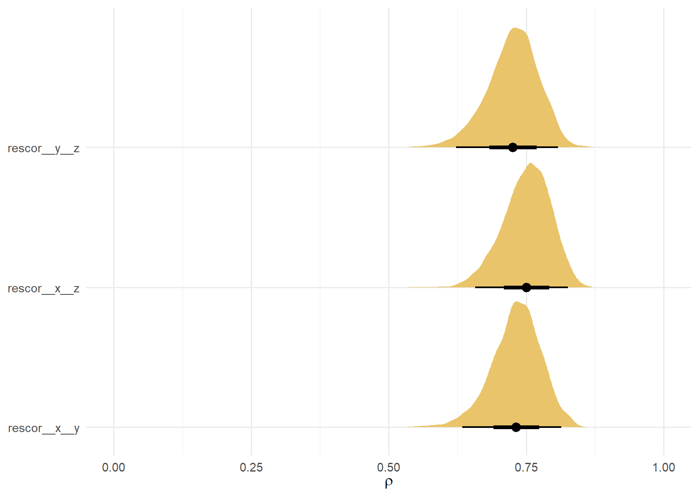
Interesting, the correlation between r and z respects the boundaries. He says “The multivariate method does not suffer from this problem. Correlations fit this way should always respect the -1 and 1 boundaries.”
LKJ Prior
In the previous example, we were introduced to the LKJ prior which appears to be a favorite one (among people that know) for priors on the correlations. Solomon (2023) writes “The LKJ is a distribution over correlation matrices with a single parameter \(\eta\). The \(\eta\) parameter can take on positive real values, which have an inflection point at 1. As values increase from 1, more prior mass is placed on identity matrices (i.e., matrices with 0 correlations). Thus, LKJ priors with \(\eta\) set to values like 2 or 4 are generally considered weakly regularizing. However, it turns out the LKJ is also sensitive the the number of variables K in the correlation matrix. As K increases, the LKJ will regularize more strongly toward the identity matrix (i.e., lower correlations). To give you a sense of what that looks like, we might make a plot.”
I like the summary provided on this website: LKJ correlation distribution in Stan
“if \(\eta\) = 1, then the density is uniform over correlation matrices of a given order K (the number of row/column). This suggest we do not know whether there is a correlation or not. The correlation values can be anything between 0 and 1.
if \(\eta\) > 1, the correlation values in correlation matrices are going to centered around 0. higher eta indicate no correlations (converge to identity correlation matrix).
if 0 < \(\eta\) < 1, the density will centered at two ends. This means correlations are favored, but both positive and negative correlation values are equally possible.”
Below the “lkjcorr_marginal” comes from Matthew Kay’s package. See the vignette, Marginal distribution of a single correlation from an LKJ distribution
crossing(eta = c(0.5, 1, 2, 3, 4, 5, 6),
K = 2:5) |>
mutate(strip = str_c("K==", K)) |>
ggplot(aes(y = eta, dist = "lkjcorr_marginal", arg1 = K, arg2 = eta)) +
stat_halfeye(.width = .95, fill = "#9be9a8") +
scale_x_continuous(expression(rho), limits = c(-1, 1),
breaks = c(-1, -.5, 0, .5, 1), labels = c("-1", "-.5", "0", ".5", "1")) +
scale_y_continuous(expression(eta), breaks = c(0.5, 1, 2, 3, 4, 5, 6)) +
labs(title = expression("Marginal correlation for the LKJ prior relative to K and "*eta),
y = expression(eta)) +
facet_wrap(~ strip, labeller = label_parsed, ncol = 4) +
theme(panel.grid.major.y = element_blank(),
panel.grid.minor = element_blank()) +
theme_minimal()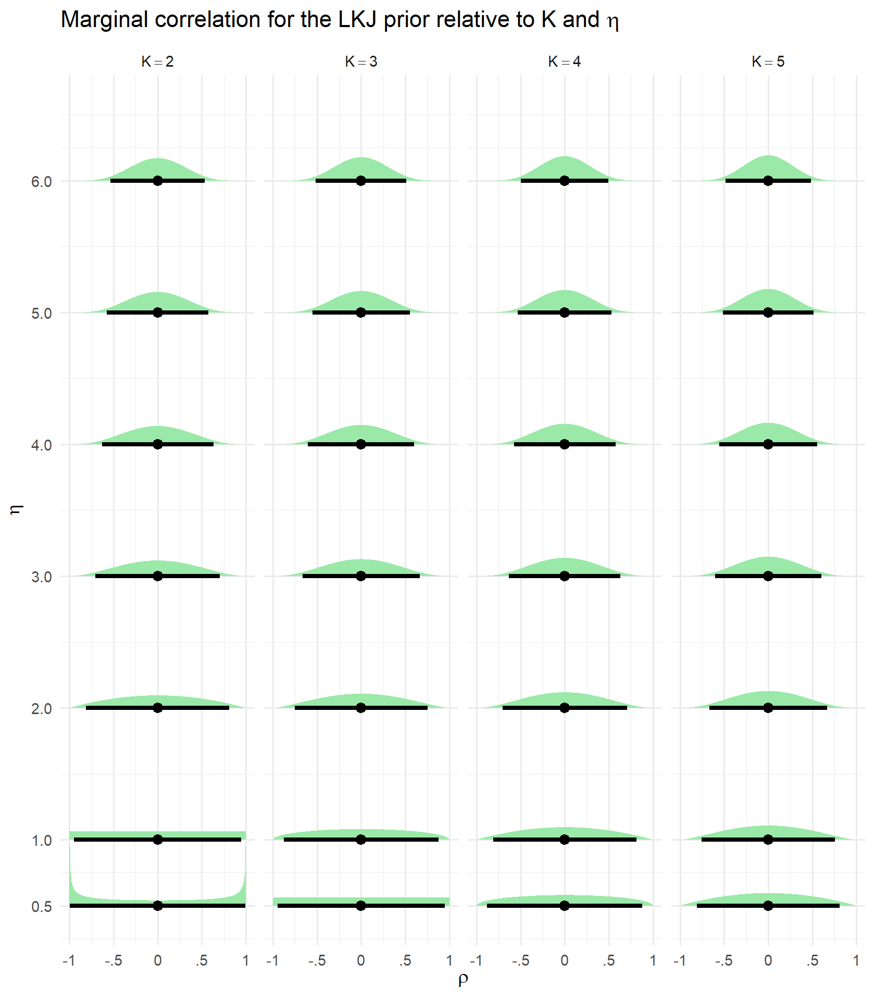
I like the way Richard McElreath visualizes this distribution in Statistical Rethinking, p. 443. He does something like this but better.
crossing(eta = c(0.5, 1, 2, 4),
K = rep(2, 4)) |>
mutate(strip = str_c("eta==", eta),
eta_fill = as.character(eta)) |>
ggplot(aes(dist = "lkjcorr_marginal", arg1 = K, arg2 = eta, fill = eta_fill)) +
stat_halfeye(.width = .95, alpha = 0.6) +
coord_flip() +
scale_fill_manual(values = c("#f2df91", "#9be9a8", "#d9a7a7", "#78a2c0")) +
labs(title = expression("Probability density for K = 2 and "*eta),
fill = expression(eta),
x = "density",
y = "correlation") +
theme(panel.grid.major.y = element_blank(),
panel.grid.minor = element_blank()) +
theme_minimal()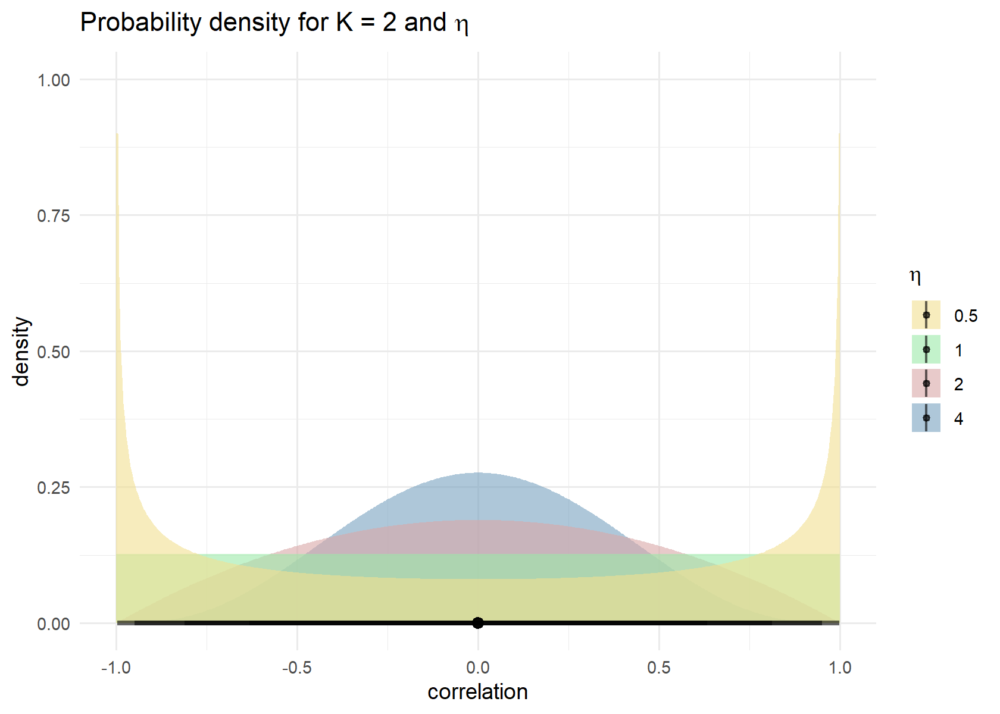
Solomon in his workshop materials continues “Thus, if you want a non-regularizing prior on \(\rho\), fit a bivariate model and set \(\eta\)=1. If you want to estimate multiple correlations and you do not want your correlations regularized toward zero, fit a series of bivariate models. Otherwise, you’ll need to get comfortable with shrinkage towards zero.
One more alternative is to use a different prior from the LKJ. For example, some in the Stan community have suggested truncated normal priors could work in contexts where you would like to use strong prior information. For more on the LKJ and this alternative, check out Stephen Martin’s great (2020) blog post, Is the LKJ(1) prior uniform? “Yes””
Links and references
In addition to the links mentioned above. See:
Gelman, A., Hill, J., & Vehtari, A. (2020). Regression and Other Stories.
Kuper, L. (2018). Understanding the regression line with standard units
Kurz, S. (2023). Introduction to Bayesian statistics with brms and the tidyverse (03-2023). Specifically, 14-Bayesian-correlations
In the Stan forums: